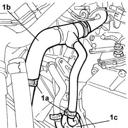
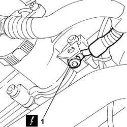
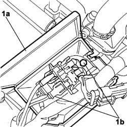
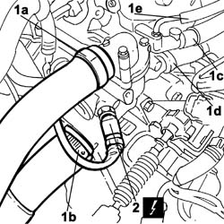
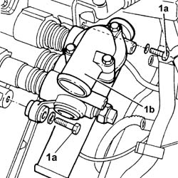

1088C36 THERMOSTAT MOUNTING - R.R.
- Path
- Procedures > 10 ENGINE > 1088 ENGINE COOLING > 1088C WATER PUMP AND THERMOSTAT > 1088C36 THERMOSTAT MOUNTING - R.R.
- Kind
- repair procedure (removal / refitting; the operation number is the code)
- Applies to
- engines: 3.0 V6, 3.2 V6; all production periods
- Interactive page
- https://sloeber94.github.io/elrnDB-lThss/en/#/190006
Applies to: engines: 3.0 V6, 3.2 V6; all production periods
 Removing
Removing
 Refitting
Refitting- Open the boot, remove the cover on the left hand side and disconnect the negative battery lead.
See in Op. 7040D50 ENGINE COMPARTMENT UPPER SOUND INSULATION SHIELD - R.R.
See in Op. 1048A21 AIR INLET HOSE FROM INTAKE TO FILTER - R.R.
See in Op. 1048A28 vacuum air circuit resonator pipe - r+r
See in Op. 1048A35 HOSE FROM FLOW METER TO RESONATOR - R.R.
See in Op. 1048A11 COMPLETE AIR FILTER -R.R.
- Position a container under the vehicle to collect the coolant.
1. Remove the band (1a) retaining the coolant supply pipe (1b) to the automatic transmission water/oil heat exchanger (1c) and partly drain the system.

Applies to: engines: 3.0 V6, 3.2 V6; all production periods
1. Undo the bolt fixing the earth at the side of the left head and disconnect the earth.
 | Description | Connector |
|---|---|---|
1 | Earth on engine | C040 |

Applies to: engines: 3.0 V6, 3.2 V6; all production periods
1. Open the cover (1a) for the connections box and undo the two bolts (1b) fixing the actual box to the thermostat unit, then remove it after having extracted the electrical connections.

Applies to: engines: 3.0 V6, 3.2 V6; all production periods
1. Open the bands and disconnect the water supply pipe (1a) from the thermostat to the raditor, the water supply pipe to the heater (1b), the water return pipe from the heater (1c), the breather (1d) and the coolant feeder pipe from the pump (1e).
2. Disconnect the engine coolant temperature sensor electrical connection.
| Description | Connector |
|---|---|---|
2 | I.E. engine temperature sensor | K045 |

Applies to: engines: 3.0 V6, 3.2 V6; all production periods
1. Undo the two fixing bolts (1a) and remove the thermostat unit (1b).

Applies to: engines: 3.0 V6, 3.2 V6; all production periods
Refitting
Removing- Fit the thermostat unit and secure it tightening the bolts to the recommended torque.
 | Value - daNm | Fastening | Component | Ø |
|---|---|---|---|---|
. | 0.9 | Bolt | THERMOSTAT MOUNT | M6 |
- Connect the engine coolant temperature sensor electrical connection.
| Description | Connector |
|---|---|---|
I.E. engine temperature sensor | K045 |
- Connect the water supply pipe (1a) from the thermostat to the raditor, the water supply pipe to the heater (1b), the water return pipe from the heater (1c), the breather (1d) and the coolant feeder pipe from the pump (1e) and close the bands.
- Position the pipe container and tighten the two fixing bolts, then connect the connections and close the cover.
- Position the earth at the side of the left head and tighten the fixing bolt.
- Connect the coolant supply pipe to the automatic transmission water/oil heat exchanger and close the retaining band.
See in Op. 1048A11 COMPLETE AIR FILTER -R.R.
See in Op. 1048A35 HOSE FROM FLOW METER TO RESONATOR - R.R.
See in Op. 1048A28 vacuum air circuit resonator pipe - r+r
See in Op. 1048A21 AIR INLET HOSE FROM INTAKE TO FILTER - R.R.
See in Op. 7040D50 ENGINE COMPARTMENT UPPER SOUND INSULATION SHIELD - R.R.
- Connect the negative battery lead, then close the boot.
See in Op. 0010T21 ENGINE COOLANT - Check density and top up if necessary
- [0010T21]
- Remove the vehicle from the lift.
Topics linked from this page (6)
- 0010T21 ENGINE COOLANT - Check density and top up if necessary
- 1048A11 COMPLETE AIR FILTER -R.R.
- 1048A21 AIR INLET HOSE FROM INTAKE TO FILTER - R.R.
- 1048A28 vacuum air circuit resonator pipe - r+r
- 1048A35 HOSE FROM FLOW METER TO RESONATOR - R.R.
- 7040D50 ENGINE COMPARTMENT UPPER SOUND INSULATION SHIELD - R.R.